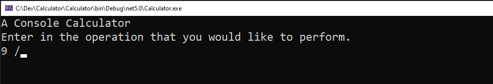

Calculator
This is an exercise in gradually-mounting complexity. Start at the beginning and complete one task at a time. As things get more complex, you might want to stop and refactor. All previous requirements should be carried forward in all steps.
Do this as a console application.
Step 1: Basic Addition
In this first step, ask for two inputs and add those. Support integers and decimal numbers.

Step 2: Checking Your Inputs
If the user enters in something that isn't a valid number, return an error message instead of computing the value.

Step 3: Take in Math Equation
Instead of asking for two separate numbers, change it to take in a string like "5 + 7". Once you've grabbed the numbers, be sure validate them to make sure they're valid.

The error path should look the same.
Step 4: Adding in Subtraction
Now support subtraction as well as addition.
Step 5: Add Support for Multiplication and Division
Now support multiplication...
...and division.
Step 6: Validate the Operator
You should also validate that the operator used is valid. If not, return an error message.
Step 7: Restarting the Calculator
We don't want our calculator to close when we're done. We want to be able to keep solving our math problems! But if they type "exit", it should stop.
Also, all validations from previous steps should restart the calculator.
Step 8: How Many Pieces in the Operation?
So far, we know that we need three things as input into our calculator, a number, an operation, and then another number. This is something we could have done earlier (and you might have), but let's go ahead and do it now. If you don't get all the required values, give them an error message like the one below. After the message, they should be able to continue.
Step 9: Continuing operations
When you complete an operation in a normal calculator, you get the response. You can then build on that result with further operations. We want to be able to do that.
For example, if you do a basic addition like "5 + 7" in a calculator you'll have the result of "12". If you then hit the "+" symbol again and then "5", it will build off of the previous value and you will have the result of "17". But if they do another full operation (i.e., two numbers and an operator), they start with zero again.
Now that you have two formats that you support, you should update your validation to tell users that they can use either format.
Step 10: Valid Operation History
The user should be able to see a history of valid operations by typing "history" in the console, which will list all valid operations and their results. If there is no history, it should say so.
Step 11: Formatting History
Showning the history like that is nice, but if the equations are of very different lengths, they're hard to read. For example...
Format them such that the results all line up. Like this:
Step 12: Filtering History
Add the ability to pass an operator to the history command so you can pull back only operations with that operator.
Step 13: The Implicit Starting Points and Filtering Problem
The filtering can be handy, but it can cause a problem. If one equation builds off of another, you might leave out a step that another equation technically depended on.
Just to show the user exactly what was happening, show the starting number with underscores around it so the value can be seen but the user knows it came from the previous operation. If we take our previous example, filtering to just subtractions would result in "_25_ - 10" printed to the history. But only do this when filtering.